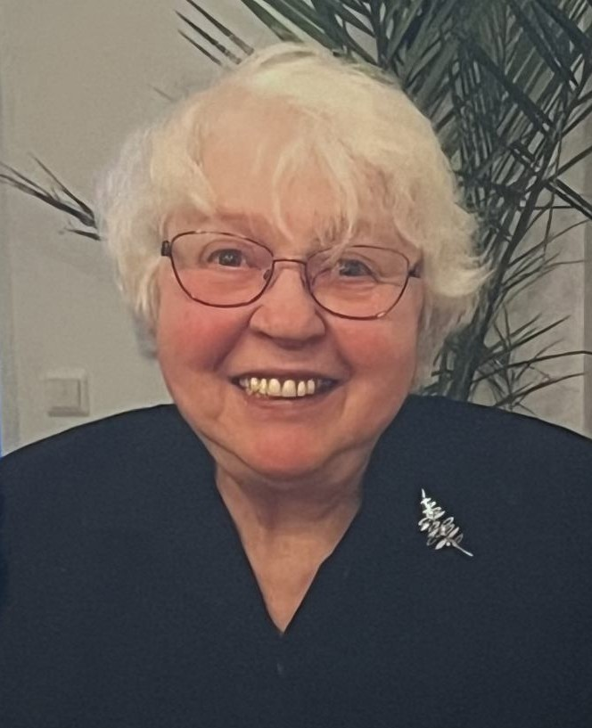

IRCA Showroom

Irene Canel - Ett liv i färg, smärta och styrka
mamma bar minnen från krig och fattigdom,
från uppbrott, flyttar och arbete i barndomen.
I konsten möttes hennes inre mörker och råhet,
med styrka, ljus och skönhet.
Varje verk bär hennes kamp, hennes livskraft.
Dramatiska, ärliga, ibland svåra – men alltid levande.
Ett år efter hennes bortgång har jag öppnat ett showroom
– en blygsam utställningslokal där hennes verk får ta plats.
Det här är mitt sätt att hedra henne.
Att låta hennes berättelse fortsätta tala – genom konsten och hantverket.
Alla konstverk är till salu – för dig som vill
bära vidare något av hennes berättelse hem till ditt eget.
Hälften kommer jag skänka till Barncancerfonden.
För den som vill förstå mer av livet bakom konsten
finns även hennes självbiografiska bok att köpa.
Öppet efter överenskommelse.
Varmt välkommen!
Sandra